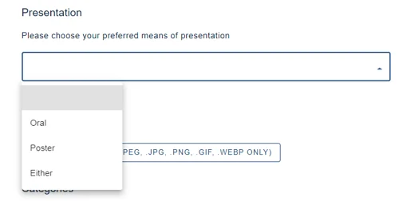
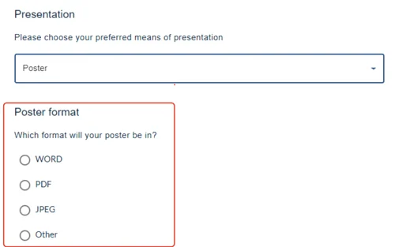
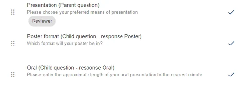
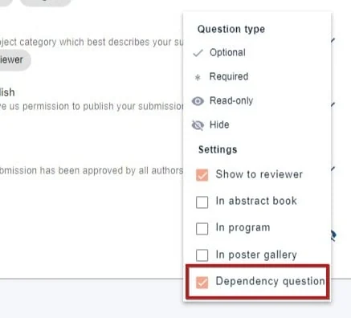
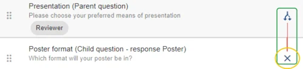
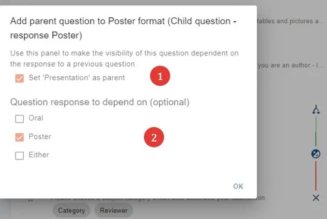
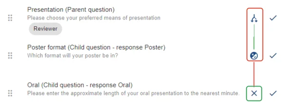

Dependency questions
There may be a requirement for you to set up dependency questions, eg. a new question is revealed when a submitter selects an option from a 'choice' type question. Read on to find out how to add this to your form.#
The guidance below is for event administrators/ organisers. If you are an end user (eg. submitter, reviewer, delegate etc), please click here.
NB: You can only set up dependency questions when the 'parent' question is a 'choice' type of question, e.g. checkbox, dropdown or radio button questions.
Go to Event dashboard → Abstract Management → Submission → Forms & Setup
Where you have a 'choice' type of question in the submission form, it is possible to reveal a hidden question depending on the response to the first question. Below is an example.
The choices to the Presentation (parent) question are as below.

As administrator, I would like the submitters that choose the Poster option, to then complete an additional question. When the choice Poster, is made, the Poster format (child) question will then be revealed.

It is best to approach setting up dependency questions in steps.
1) Set up your 'parent' and any 'child' questions, ensuring your parent question is a checkbox, dropdown or radio button type. Child questions can be any type.
2) Design your form so that the parent question immediately precedes any child questions.

3) Click on the display settings to the right of the parent question and check Dependency question

The following icons will appear in the edit view of your submission form. This sets up a link between the parent and the first child question.
Set up the conditions by clicking on the cross icon (yellow) next to the first child question.

4) The popup shown below will appear.
First ensure that you would like to set up the relevant 1) Parent question. Once you have done so, the options will be revealed.
Choose the responses) (2) that when selected, will reveal this child question. Click OK to save your choices and return to the edit form view.

- You will see that the line between the parent and child questions has turned green (red), signifying that the link is now set up. You can then set up the second child question (green), if required (if you require a different question to be revealed for a different response), using the method above.

- Click Preview at the top of the form to test your dependency questions.
NB: If you move the order of the questions, the parent / child links will break.

Common questions#
Is it possible to include questions that only appear if a response to a previous question is selected?#
Yes - see Dependency questions.
Did this page solve it?
Thanks — this helps us fix it.
Didn't solve it? Ask our support team
No question is too small, and there's no charge for asking. Raise a ticket and someone who knows the software will pick it up.